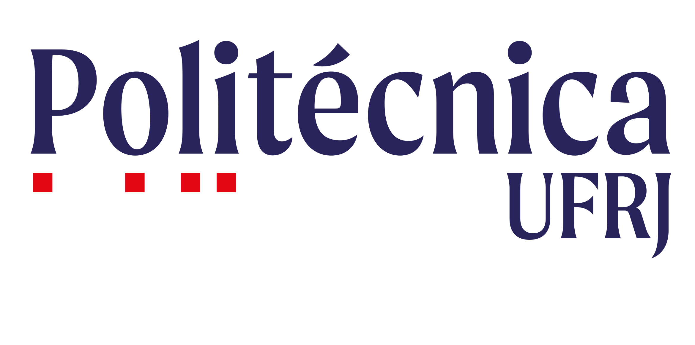
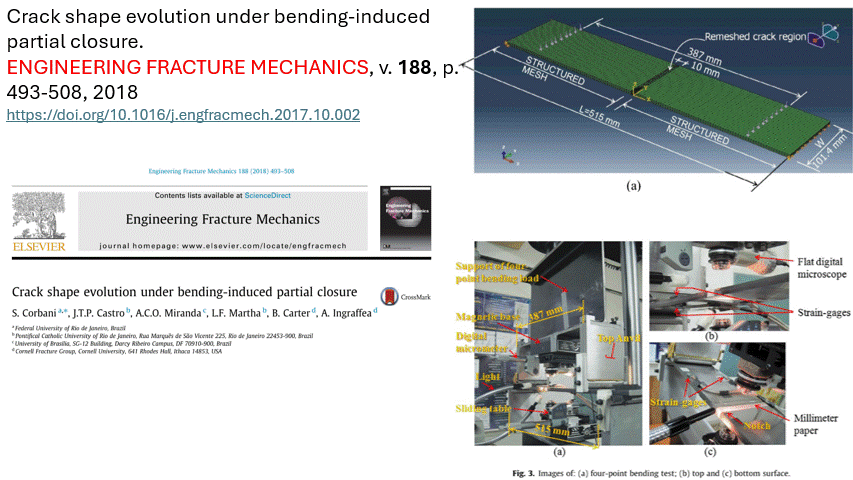

|
Silvia Corbani Associate Professor, POLI, 2016-Present Researcher at the Acoustics and Vibrations Laboratory, LAVI/PEM/COPPE/UFRJ Postgraduate Specialization Program Coordinator in Steel Structures, MET/POLI/UFRJ corbani@poli.ufrj.br |
 |
Associate Professor in the Department of Structures at the Escola Politecnica of Universidade Federal do Rio de Janeiro (Poli/UFRJ), Brazil. I am permanent Professor in the Professional Master's Program in Structural Design (PPE/Poli/UFRJ). Since 2022, I have coordinated the Postgraduate Specialization Program in Steel Structures in Universidade Federal do Rio de Janeiro (MET/Poli/UFRJ). I graduated in Civil Engineering from the Mauá Institute of Technology (2001), hold a master's degree in Civil Engineering from the University of São Paulo-USP/SP (2006), and a DSc. in Civil Engineering from the Pontifical Catholic University of Rio de Janeiro PUC-Rio (2012) with academic exchange at Cornell University. I have experience in structural engineering design, focusing on structural mechanics, working on the following topics: Finite Element Analysis, Fracture and Fatigue Mechanics in metallic materials, Analysis and Design of Steel Structures.
Here you can find my publications, courses, and some other material related to my academic career. My detailed CV is available in Portuguese at Lattes Platform. You can also find more at ORCID and Google Scholar.
I teach Civil Engineering courses at both the undergraduate and graduate levels. I am currently teaching:
Quick visual overview of my main publications:

For more details:
Most of my publication are available on-line, but feel free to contact me if you want some of my papers that you could not find on-line.
In my view, a product is the core asset (development outcomes) of our research achievements. Here, I share the main products under development by our group:
Software:
I have participated as member (M) of the following projects:
Supervision of doctoral theses, master dissertations, bachelor and research beginner projects:
Local collaborators:
Regional collaborators:
International collaborators:
Universidade Federal do Rio de Janeiro. CT - Centro de Tecnologia - Escola Politécnica - Departamento de Estruturas
21941909 - Rio de Janeiro, RJ - Brasil